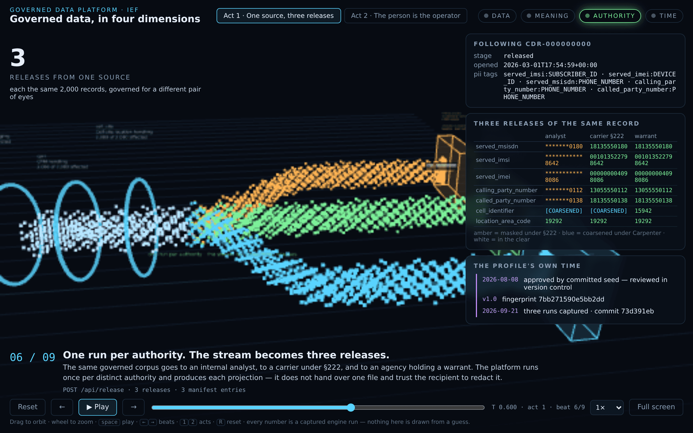

01 · Governed Data Platform
Governed Data Platform
Profile-driven governance for data as it passes through: a data plane, not a catalog. A profile declares what a dataset must contain and which controls apply; the platform enforces it, applies lineage to every run without exception, and publishes what it enforced. One upload becomes a release set, with each recipient receiving the projection their authority entitles them to. A machine may propose a profile; only a named person approves one.
- ODCS-shaped profiles · OpenLineage on every run
- §222 · Carpenter · E.O. 13526 · §2.3
- KLV · Remote ID · SAPIENT read by their bytes
 Successfully installed learned-behavior-0.2.0
Successfully installed learned-behavior-0.2.0